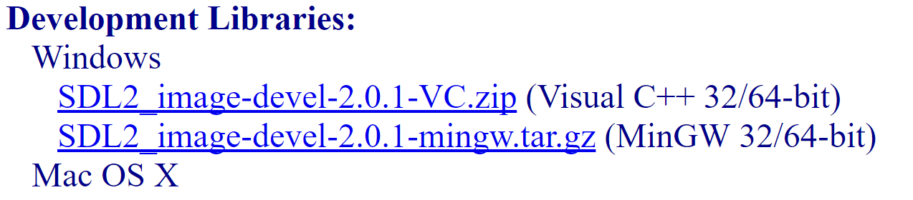
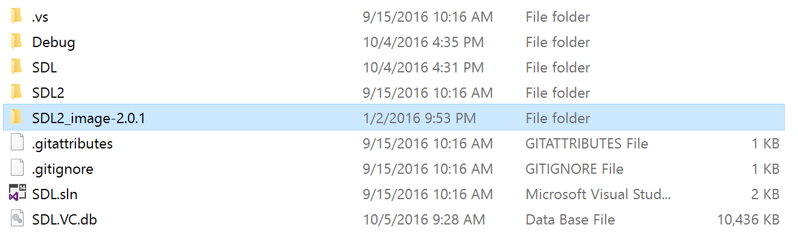
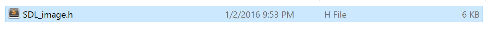
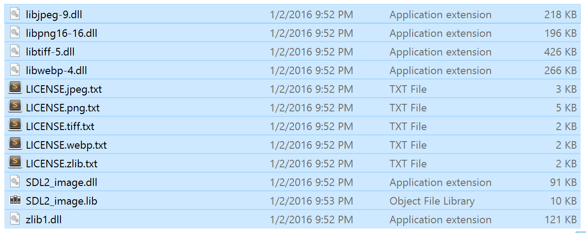
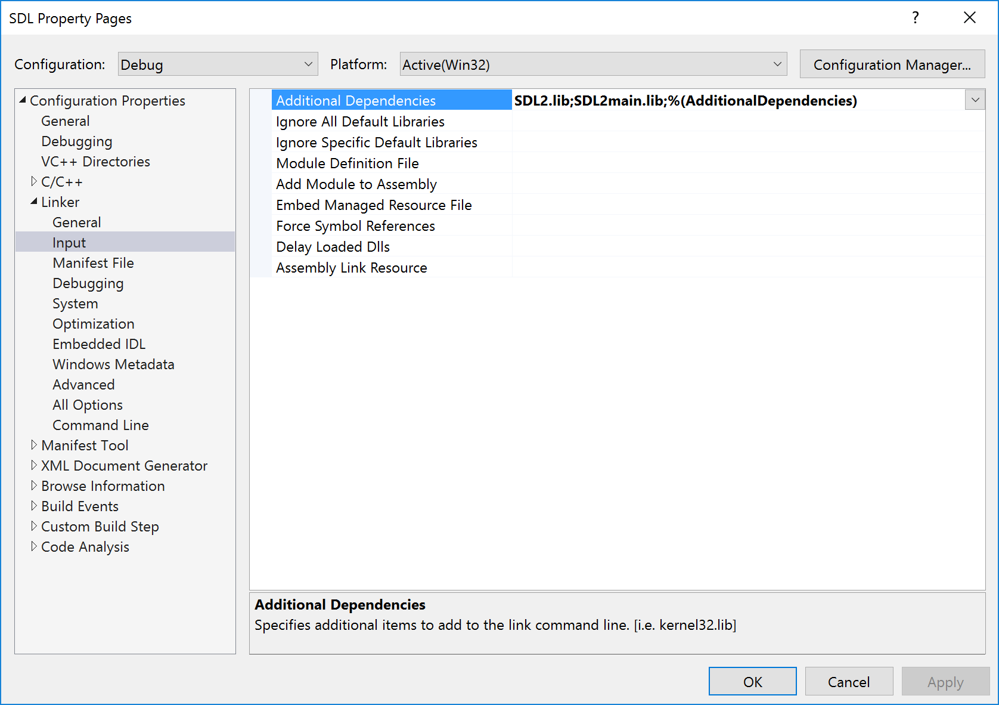
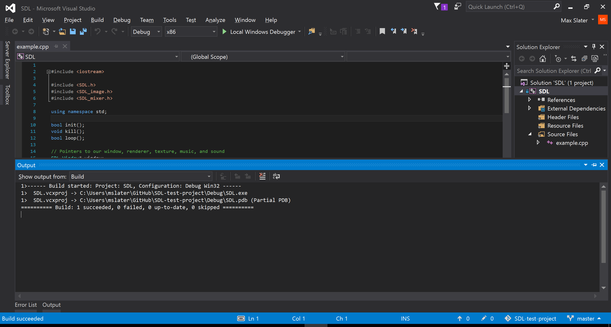

Extensions Files
First, set up an project with SDL.
Then, download the files for your extension library (see listing in lesson 06). For Visual Studio, download the "VC" development libraries.
Extract the files and move the folder into your project.
For convenience, add the contents of the extension include directory to your SDL2 include folder, and the contents of the extension lib/x86 directory to your SDL2 lib/x86 folder.
include:  lib/x86: Project Settings
Open up your project settings in visual studio. Because you copied the files into your SDL2 folder, you should not have to change any directory settings. However, edit linker > input:
Add the names of each extension library. Here, we are adding SDL_image:

Build
Assuming you correctly added the extension files, you should be able to include the extension header and build your program.
